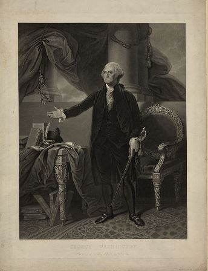
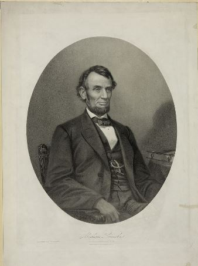
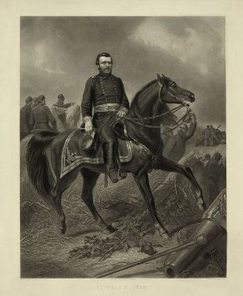
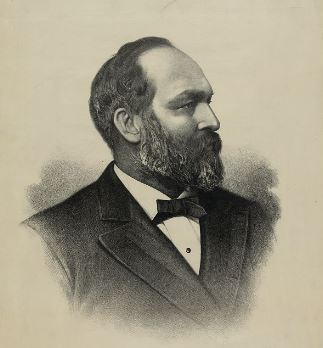

America's Greatest Patriots

George Washington, Federalist, America's first president and the Father of our Country.
Born: February 22, 1732
Died: December 14, 1799

Abraham Lincoln, National Union Party, America's sixteenth president helped end the civil war by declaring all slaves are free men.
Born: February 12, 1809
Assassinated: April 15, 1865

Ulysses S. Grant, Republican, America's eighteenth president and the Commanding General that led the Union Army to victory in during the American Civil War.
Born: April 27, 1822
Died: July 23, 1885

James A. Garfield, Republican, America's twentieth president and was a major general in the Union Army during the Civil War. He fought for Civil Rights even before the civil war.
Born: November 19, 1822
Assassinated: September 19, 1881